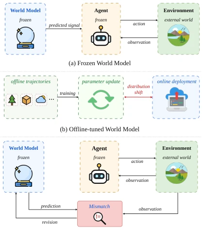
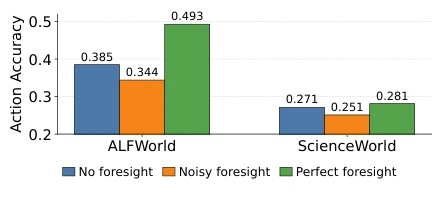
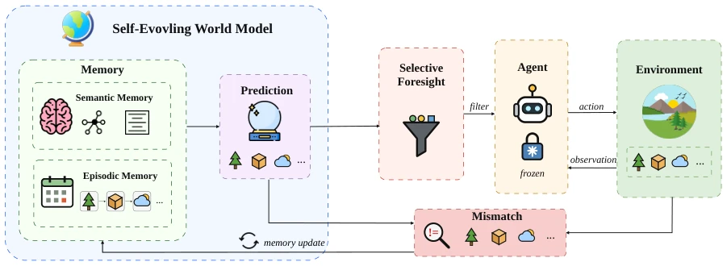
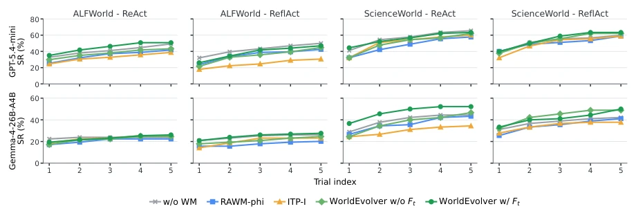
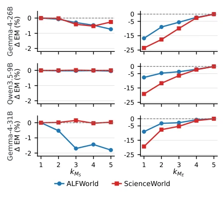
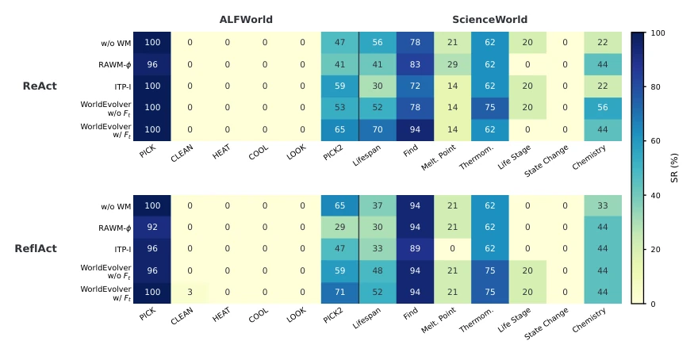
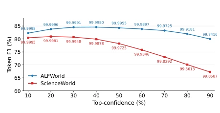
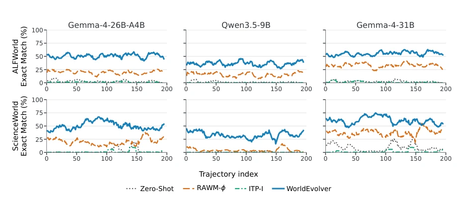
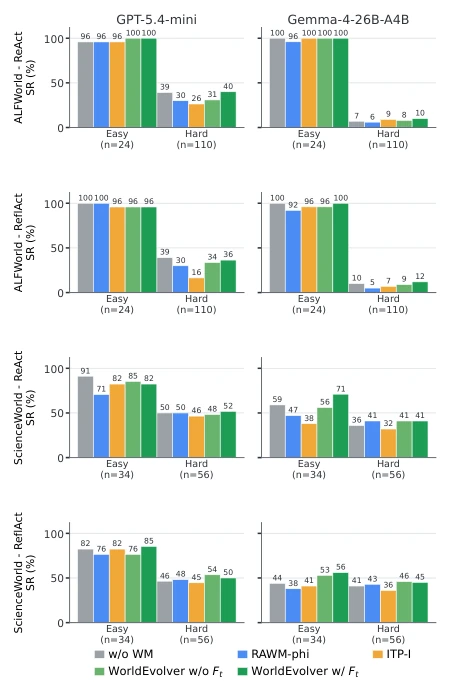
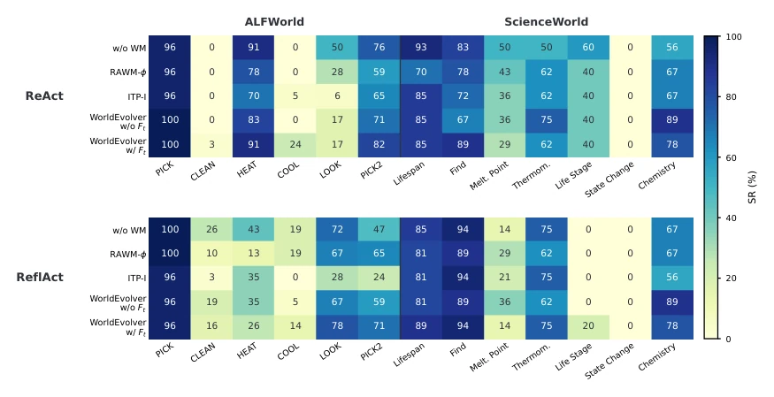

This paper applies a "read-only mode" patch to the "World Model" of LLM Agents. The authors realized that online fine-tuning parameters for large models is both expensive and prone to forgetting, so they developed WORLDEVOLVER, shifting "evolution" from weights to context memory. This approach is quite clever, using Episodic Memory to record the past, Semantic Memory to record lessons learned, and pairing it with Selective Foresight to filter out unreliable predictions. However, experiments are all within text sandboxes like ALFWorld and ScienceWorld, still a distance away from true Embodied AI. Moreover, relying on token probabilities for confidence filtering, if the model's output probabilities are inaccurate, this "filter" might become a "blind box". Overall, it is a cost-saving engineering trick, but the theoretical upper limit depends on environment complexity. It proves that prediction fidelity can be improved through memory retrieval and rule extraction without changing weights, though generalization to complex physical environments still needs verification.
研究动机Motivation
现有 LLM Agent 依赖世界模型（World Models）提供长视野预测，但部署时环境变化会导致分布偏移（distribution shifts），类似机器人领域的 sim-to-real gap。冻结的世界模型（Frozen World Model）无法适应新情况，容易误判（Li et al., 2025a）。而通过梯度更新参数来适应（Offline-tuned）成本太高，且易引发灾难性遗忘（Zheng et al., 2023）。此外，不可靠的预测反而可能误导 Agent（Qian et al., 2026）。因此，需要一种在不更新模型权重前提下，能利用部署时反馈自我进化的框架。这解决了模型在动态环境中“学不动”和“乱学”的矛盾，为长程规划提供了更稳健的 foresight 机制。
Existing LLM Agents rely on World Models to provide long-horizon predictions, but environmental changes during deployment cause distribution shifts, similar to the sim-to-real gap in the robotics field. Frozen World Models cannot adapt to new situations and are prone to misjudgment (Li et al., 2025a). While adapting through gradient parameter updates (Offline-tuned) is too costly and prone to triggering catastrophic forgetting (Zheng et al., 2023). Furthermore, unreliable predictions may instead mislead the Agent (Qian et al., 2026). Therefore, a framework is needed that can utilize deployment feedback for self-evolution without updating model weights. This resolves the contradiction of the model being "unable to learn" and "learning randomly" in dynamic environments, providing a more robust foresight mechanism for long-horizon planning.

Figure 1: Contrast of different world models. Frozen (a) and offline-tuned (b) world models supply predictions to the agent without revising from deployment-time in- teraction; self-evolving (c) world models accumulate realized transitions and evolve through mismatches be- tween predicted and observed outcomes.

Figure 2: Preliminary oracle study with Gemma-4-26B- A4B on the Word2World evaluation set (Li et al., 2025b). The ReAct agent receives no foresight, noisy foresight, or perfect foresight, and generated actions are scored against teacher actions by exact action accuracy.
WORLDEVOLVER's core lies in "frozen model, evolving context". The overall process is: Agent generates draft actions, World Model predicts consequences combined with memory, feedback to Agent for execution after confidence filtering, finally update memory. Specific modules include: (1) Episodic Memory: stores real action transition sequences (oi, ai, oi+1), retrieves relevant history via Jaccard similarity, used for "exploitation". (2) Semantic Memory: converts differences between predictions and observations into heuristic rules. Through factorized state space comparison (g(ˆot+1) vs g(ot+1)), LLM Critic generates rules and maintains evidence scores, used for "exploration". (3) Selective Foresight: calculates the average log probability of output tokens as confidence, masks predictions below threshold to prevent misleading. Memory update is incremental, not relying on gradient descent. This design allows the model to "learn from mistakes" like humans, but without retraining.

Figure 3: Overview of WORLDEVOLVER. A frozen world model produces action-conditioned predictions using Episodic Memory for exploitation through retrieval-based simulation over previous action transitions and Semantic Memory for exploration through persistent heuristic-rule discovery from prediction-observation mismatches. Selec- tive Foresight filters the prediction before it conditions the frozen agent.
Evaluated on ALFWorld and ScienceWorld, using Word2World benchmark to measure prediction accuracy, AgentBoard to measure task success rate. Baselines include Zero-Shot, RAWM-ϕ, and ITP-I. Results show WORLDEVOLVER has the highest prediction accuracy on three Backbones, and downstream task success rate is better than baselines. Ablation studies show Episodic Memory (EM) contributes the most, Semantic Memory (SM) has an auxiliary role. Selective Foresight shows more obvious improvement on weak Backbones. Compared to RAWM-ϕ, WORLDEVOLVER's online memory accumulation is better than static retrieval. On Gemma-4-26B-A4B, Success Rate improved by approximately 3-6 percentage points, proving the effectiveness of test-time memory revision.

Figure 4: Cumulative best-of-L Agent Planning Success Rate on ALFWorld and ScienceWorld.

Figure 5: Relative gains from memory hyperparameters for world model prediction, reported as ∆EM. kMS varies semantic-memory batch size relative to 1, while kME varies episodic-memory retrieval size relative to 5.

Figure 10: Heatmap of agent planning success rates (%) for Gemma-4-26B-A4B across different world models, reported as best-of-5 performance on ALFWorld and ScienceWorld task types.
其他图片Other Figures

Figure 6: Selective foresight confidence calibration on Token F1 (%) for Gemma-4-26B-A4B under the WORLDEVOLVER configuration.

Figure 7: Trajectory-level world model prediction Exact Match (%) along the Word2World deployment order. We report macro Exact Match averaged over the prediction steps within each trajectory.

Figure 8: Agent Planning Success Rate (%) by Agent- Board easy/hard split, reported as best-of-5.

Figure 9: Heatmap of agent planning success rates (%) for GPT-5.4-mini across different world models, reported as best-of-5 performance on ALFWorld and ScienceWorld task types.